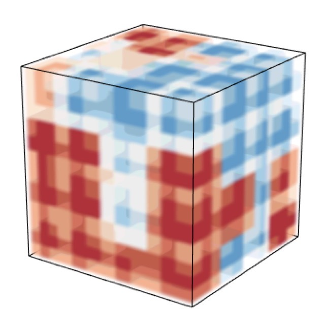

|
Jiaxin Hu
I am a third-year Ph.D. student in Statistics at University of Wisconsin-Madison working with Prof. Miaoyan Wang. My research interests lie in the intersection of statistics and machine learning. Currently, I am working on higher-order tensor methods with application in networks.
Prior to the Ph.D. program, I received my Master's degree in Statistics from UW-Madison in 2020 and Bachelor's degree in Statistics from Wuhan University in 2019.
Email /
Twitter
|
|
|

|
Multiway spherical clustering via degree-corrected tensor block models
Jiaxin Hu and Miaoyan Wang
International Conference on Artificial Intelligence and Statistics (AISTATS), 2022
arXiv
/
Software
- This work wins Best Student Paper Award -- honorable mention from the Statistical Learning and Data Science Section of the American Statistical Association (ASA), 2022.
- Part of the work is accepted into NeurIPS 2021 Workshop on Quantum Tensor Networks in Machine Learning.
|
- Invited Session Chair at Joint Statistical Meetings (JSM) 2022.
- Invited Session Chair of Software on Statistical Computing at Joint Statistical Meetings (JSM) 2021.
- Reviewer for AISTATS 2021 (3), JASA (2), JRSS-SB (2), IEEE Transactions on Signal Processing (1), PNAS (1), Genetics (1), PLOS (1), JMLR (1).
|
- Best Student Paper Award -- honorable mention from the Statistical Learning and Data Science Section of the American Statistical Association (ASA), 2022.
- Best Student Paper Award from the Statistical Computing and Graphics Section of American Statistical Association (ASA), 2021
|
- Discussion TA of STAT 601 Statistical Method I, Fall 2020, Spring 2021, Fall 2021.
- Discussion TA of STAT 679 Statistics: Foundations & Regression and Big Data, Summer 2021.
|
|
Website design from Jon Barron with source code.
|
|
{kind=link}